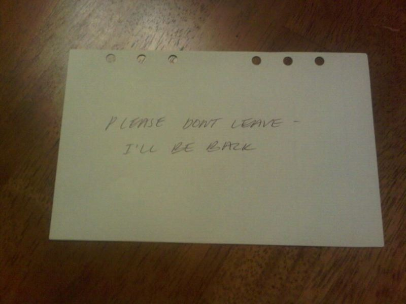

Autmn-9/15/2014-9/16/2014
You clutch the pocket knife in your hand. You see a weird being with a white face
and creepy scars on his face. You position the knife so that you are ready to strike
at him. He screams, "WHERE ARE YOU, I JUST WANT TO PLAY WITH YOU." Then his head turns
to the closet, he smiles with his mouth open. He walks slowly towards the closet.
As soon as he gets close enough you open the door and immediately stab him. He yells
a painful sound, he is hurt. You head for the door and run down the staircase. You
run out to your front porch and start running, you don't know where but you are glad
you escaped. You eventually get to a police station and run in. You talk frantically
to the officer about what you had experience. After receiving all the details about
his face, he tells you who it was. It was him. The one responsible for all the deaths
you've seen on the tv. It was Jeff. The following day your house is surrounded by
policemen. As it turns out, Jeff had escaped and left a note just for you.
home
Thank you for playing, hope you aren't too scarred to play agin and find the other endings
